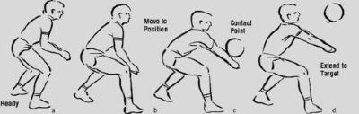
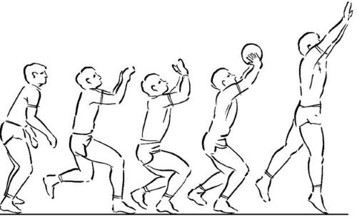
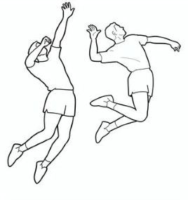
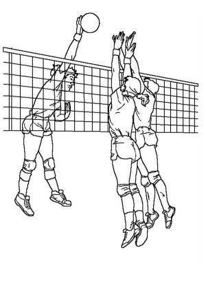

Volleyball Skills
In volleyball, there are many important skills that can be confusing at first but are easy to develope over time. These skills include Serving, Passing, Setting, Spiking, and Blocking. Each plays a very important roles to winning a volleyball game.
Serving
This skill start off the game. Having a good serve could mean you win that set 25-0 without even requiring the teamwork, communication, and movement of your team. Serving is the only point in the entire game where you have full control over the ball without outside intervention. There are multiple legal ways to serve but the two most common are overhand and underhand shown below.
Underhand Serve

The underhand serve is great for beginners. The ball is hit from below and it is easier to control.
Overhand Serve

The overhand serve is more advanced. It uses more power but it can be harder for the other team to receive.
Passing
This is one of the key foundations for being a good volleyball player. This tequnique is often used as a way to return the ball from a serve as a libero r Outside Backin optimal postion for your Setter. To preform a pass, bring your hands together and cup them, do not interlace them (could lead to injury). bring your elbows closer in and rotate your arms outward. This forms what is called a platform. This is where the ball will hit and bounce off.
Passing

Using your legs and keeping a flat platform is key to a good consistant pass.
Setting
This is one of the most important skills in all of volleyball. Setting usually happing by the Setter who is positioned close to the middle of the net. Setting is what "sets" up the ball for the Spiker to hit the ball over the net. The difference between a good and a bad set is the difference between a good and bad hit from the spiker which could lead to a point. In order to proform a set, form a diamond with your pointer fingers and thumbs, them spread them about 2 inches apart. When the ball comes to you, push from your thumbs and pointer fingers away so that the ball moves away from your body.
Setting

Using your legs and keeping a flat platform is key to a good consistant pass.
Spiking
This is the most flashy skill of volleyball. This one is the skill you think about when you think "volleyball". Spiking is preformed by the Spiker or Outside Hitter hitting it down twords the ground while the ball is still above the net. Even though this action is flashy, it is hard to pull off. On top of hitting the ball hard and correctly whilest in mid air, jumping high enough to hit the ball is another skillset. To preform a good spike, use a running start to jump and hit the ball whilest it is above the net. Next, hit the ball on the top side of it to hit the ball downward.
Spiking

Using your back muscles and pulling the spiking hand back to "unload" creates massive power potential
Blocking
This skill is heavily utlized when the opposing team has spiking threats. Blocking also requires some jump height as it requires you to block the ball passing over the net to your teams side. Usually blocking has mulitple people jumping at once to prevent different angles from being attacked. Depending on where the ball is the clostest people to the ball will jump to block it.
Blocking

Jumping stright up and using both hands raises the posibility that the spike is blocked and ricocheted.